In this game, you have to escape from every stage/room, you have to find what you have to do, there is some enigme, speed, precision, knoledge and a lot more.
If you have wrong somewhere or you just loose the stage/room, you have to restart from the start.
And during the game, you have to find 3 tiny papers, at a certain stage, if you don't have them, you restart.
It was mad by me and the traduction/voice by a friend.
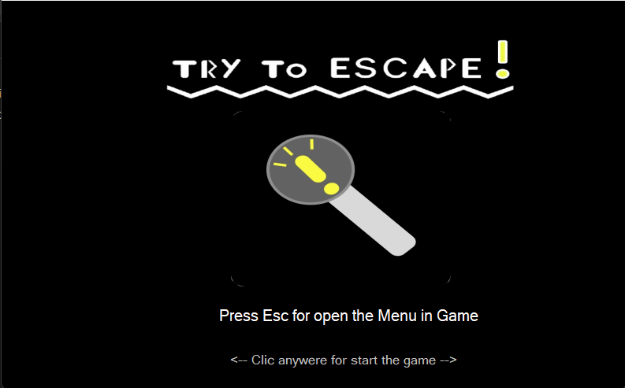
This is the launch interface, if you close it,
a timer start (you can show it in the menu in-game),
it's made for the speedrunner.
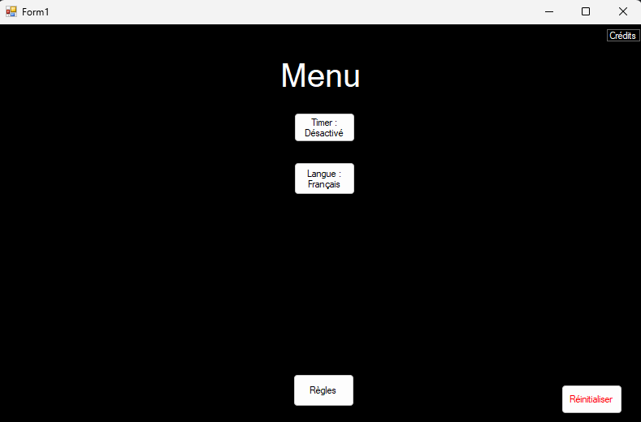
This is the in-game menu, you can change a lot of parameters.
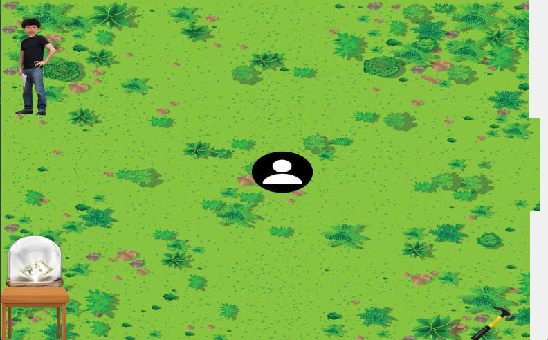
It's the srart of the game, the "Spawn".
Here, you have to take the hammer and break the glass with it.
Then you read the paper and go talk to the PNJ,
he will asks you some questions and you have to answer right to it.
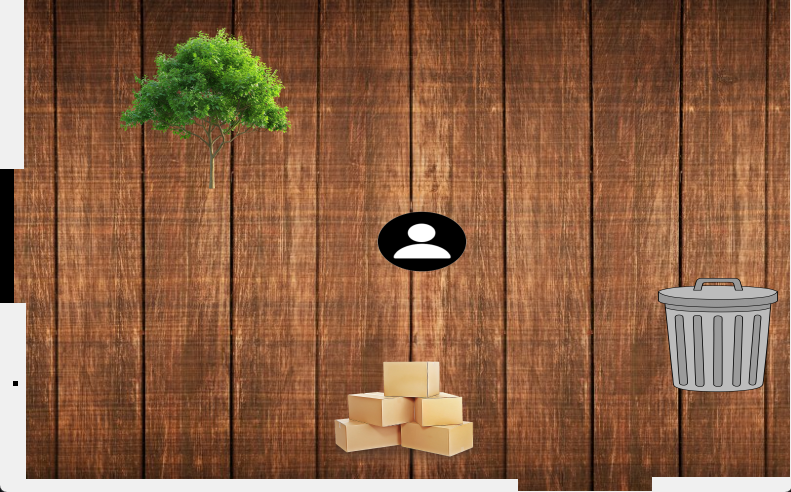
This is the second stage, after success the start.
Here, you have to find all the hidded buttons
and press them in the right order :
1. Tree
2. Boxes
3. Trashcan
4. The black pixel on the left-wall
After pressed all the buttons,
take the tiny paper in the top-right
corner and you can go to the next stage
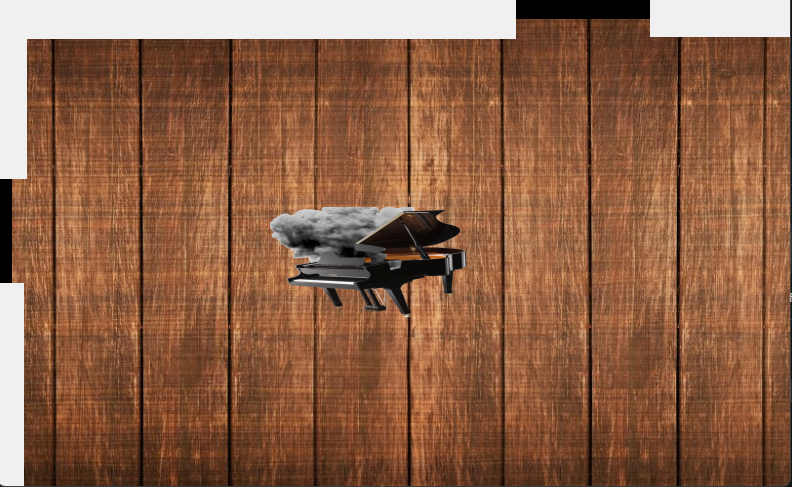
This is the third stage, you have to use de piano correctly.
The order of the piano keys are : From the left to the right.
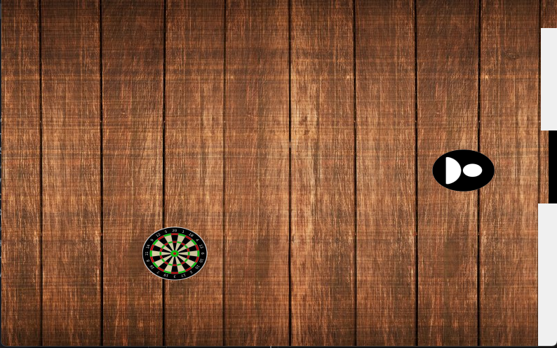
This is the fourth stage, you juste have to
click on the targets until they don't respawn.
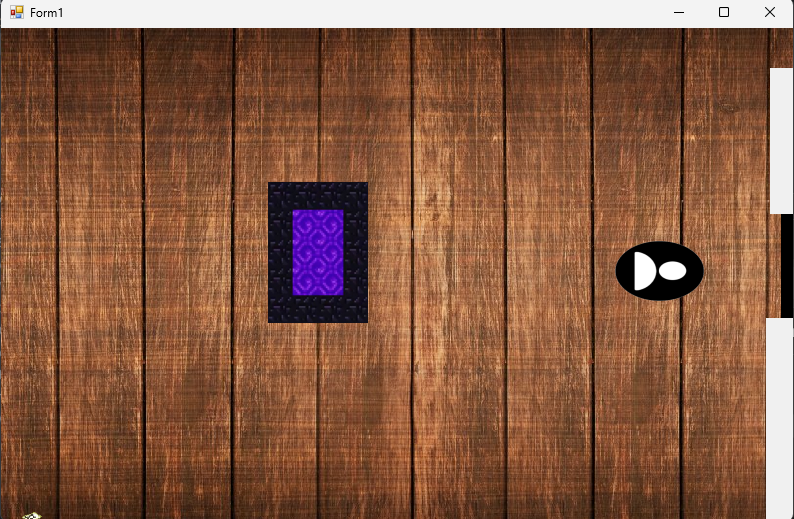
This is the fifth stage, you juste have to enter in the nether portal
Don't forget the tiny paper in the bottom-left corner 😉
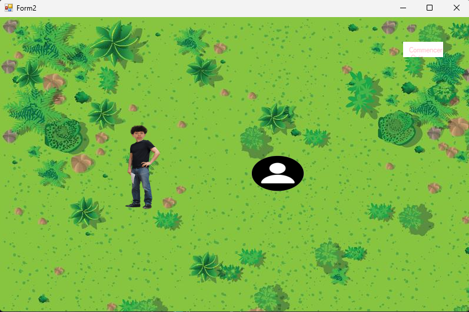
This is the sixth stage, you have to answer to a litle quiz (7 questions).
The answers are :
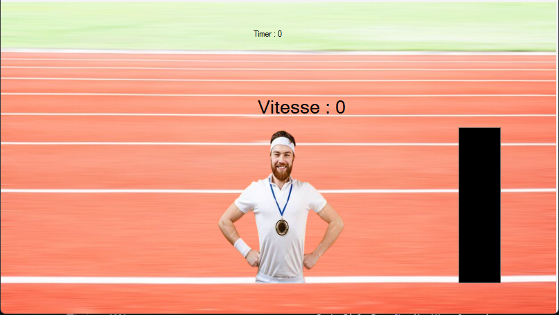
This is the seventh stage, you have to click the fastest you
can and when you will be at the max (250),
you will have to stay between 250-240 while 10 seconds.
This is the victory screen, if you win my game without
looking at the spoil on this site or looking at the source code, honestly GG.
This is a gameplay with all the answers and all the looking.
In this game, you have to sink all the boat that where automatically generated before you can play (when the loading screen is visible)
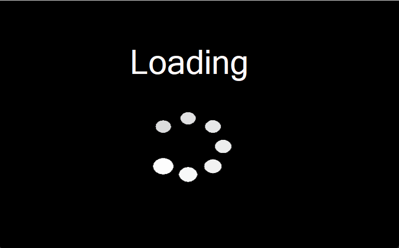
This is the loading screen, while you see it, it's because the boats are currently randomely generated
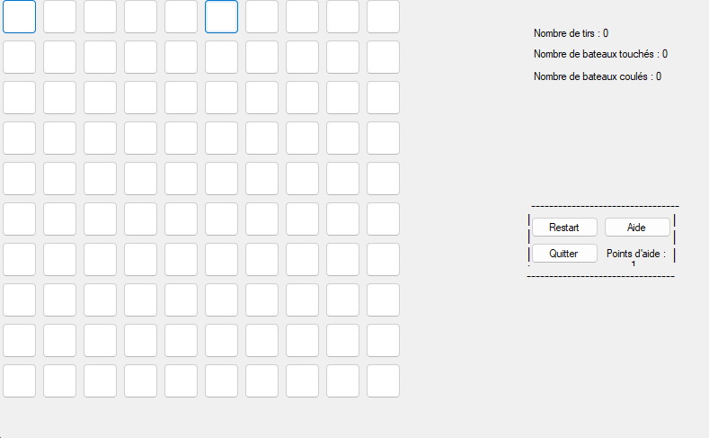
Here, you can start playing by press on
the buttons for checking if there is a boat,
you can see the differance with the colors.
In the top-right, you can see the stats of your game.
On the middle right, you have multiple options.
There is a full gameplay of the game.
In this game, you earn money by the time and can upgrade the elements that give you money to get more money.
The goal is to earn a max of money.
The game isn't finished yet.
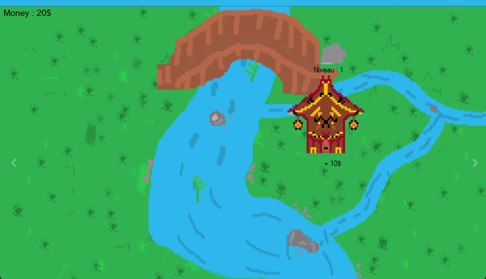
There is the start of the game, the only thing that gives you money is the house, upgrade it to be richer.
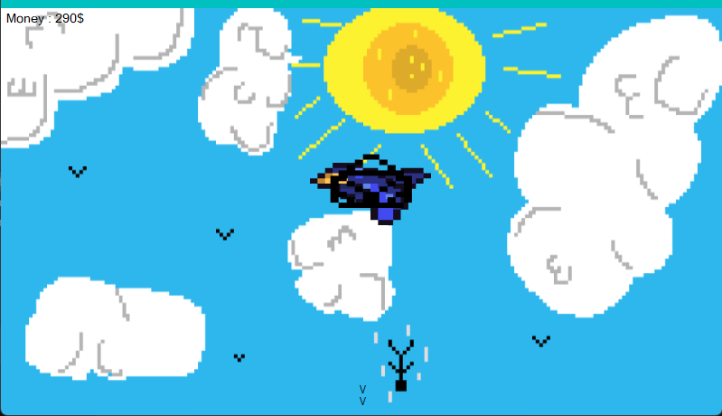
This is the second zone, you can unlock the bird, it gives you money only if you click on it.
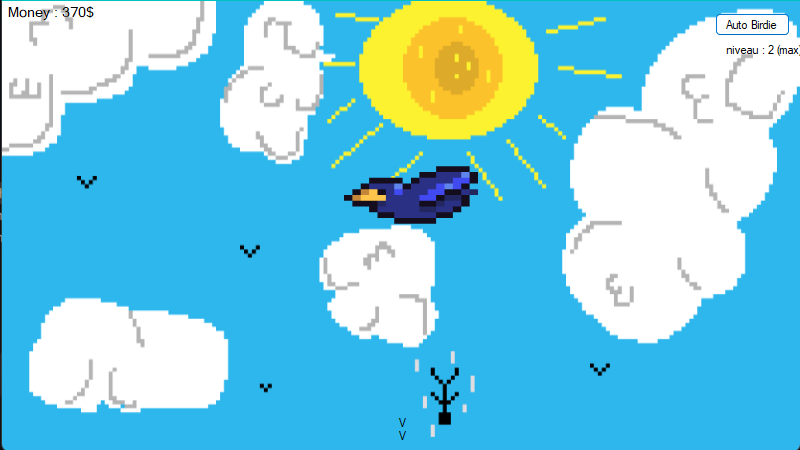
After unlocked the bird, you can unlock the "Auto birdie", it auto clicks for you.
You can upgrade it to the second LVL.
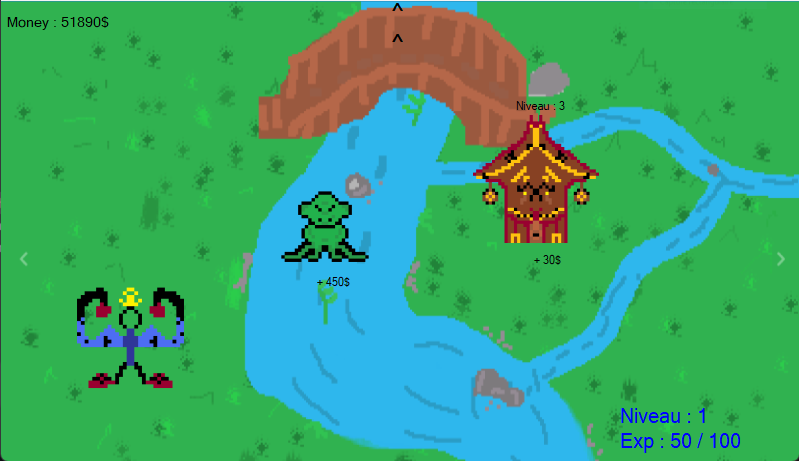
This is the start, but after unlocked the birdie and the auto birdie,
you can buy the monster then the frog. You can't upgrade
them and after unlocked the forg, the game is finished.
This is a full gameplay of the game
This program allows you to automatically do several mouse clicks at the position of your pointer.
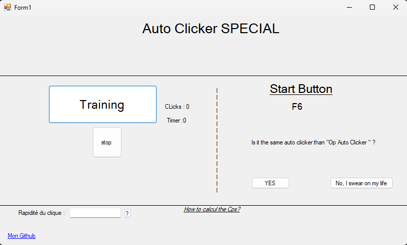
Here, you can see all the possibilities of the Auto Clicker.
You can try it by pressing F6 and let your pointer on the "Training" button.
In the textbox "Rapidité du clique" you can enter the level of speed you want,
bigger is the number, faster the clicks will be (It's automatically at the fastest).
Here is a litle demo.
This is a game where you have to find all the cases that are not a mine, but I reimagined it, so I added some lives and you can find some, it depends of the chose difficulty.